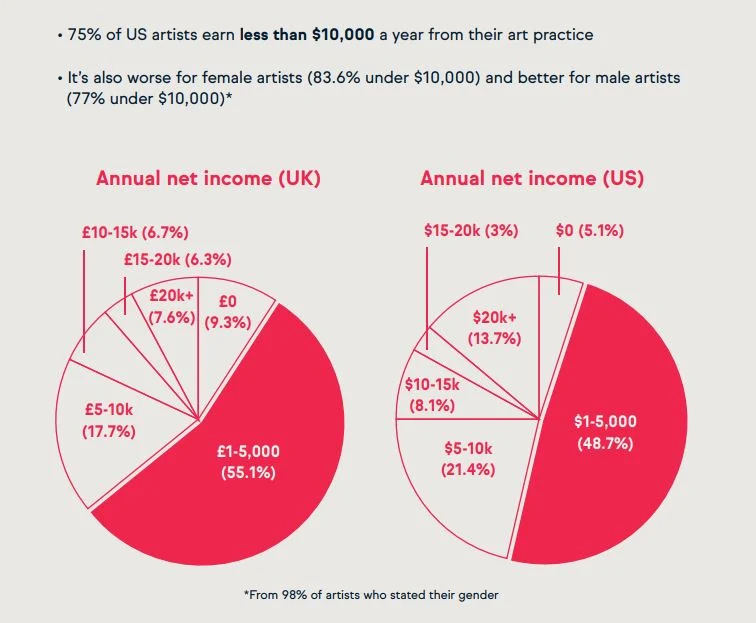
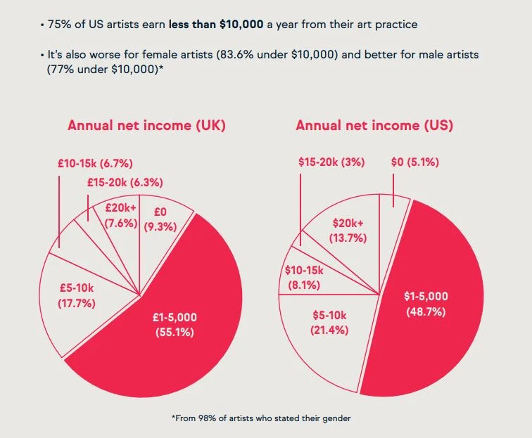

So... Why should I care about local bands? Why shouldn't I just listen to Chapelle Roan and whatevers on the radio?
Local bands are a pivotal aspect to the music scene in Australia, as they enrich the culture of Australia and provide major economic benifits to the country, as they fill up pubs and bars with live performances, and with your help, you can keep these talented bands afloat, as they suffer economically big time despite their contribution to the economy.
 
Though small artists/bands contributed around 15.7 billion dollars and produced 80000 jobs in 2022 through a variety of bar/pub performances and performances at smaller venues in general, around 50% percent of Australian artists didn't even make $6000 dollars from a year of musical work, which is around 15% percent of what a minimum worker makes in Australia. This is highly unacceptable, as the amount of effor it requires to become a musician is disproportional to how much money is put out. And this isn't purely an Australian struggle, artists all over the world suffer from unfair wages which force them to pick up multiple jobs to be able to support themselves, potentially driving them away from continuing doing music.

Though small artists/bands contributed around 15.7 billion dollars and produced 80000 jobs in 2022 through a variety of bar/pub performances and performances at smaller venues in general, around 50% percent of Australian artists didn't even make $6000 dollars from a year of musical work, which is around 15% percent of what a minimum worker makes in Australia. This is highly unacceptable, as the amount of effor it requires to become a musician is disproportional to how much money is put out. And this isn't purely an Australian struggle, artists all over the world suffer from unfair wages which force them to pick up multiple jobs to be able to support themselves, potentially driving them away from continuing doing music.